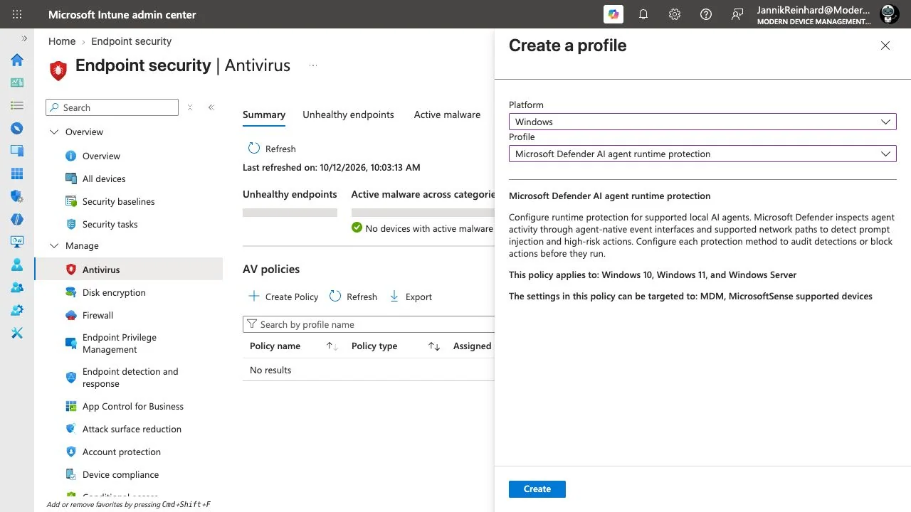
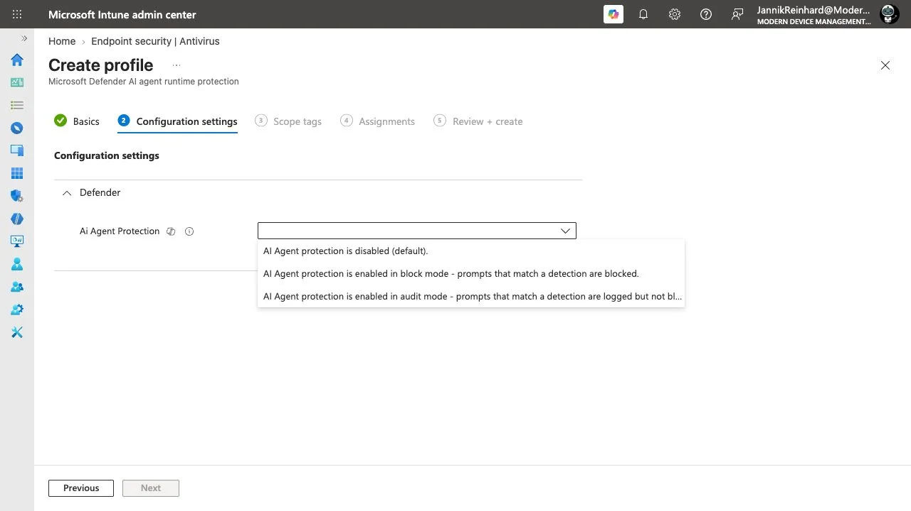
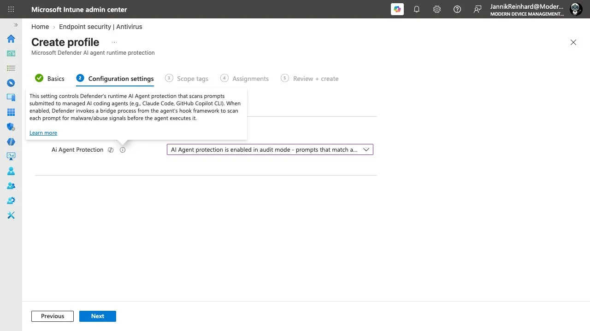
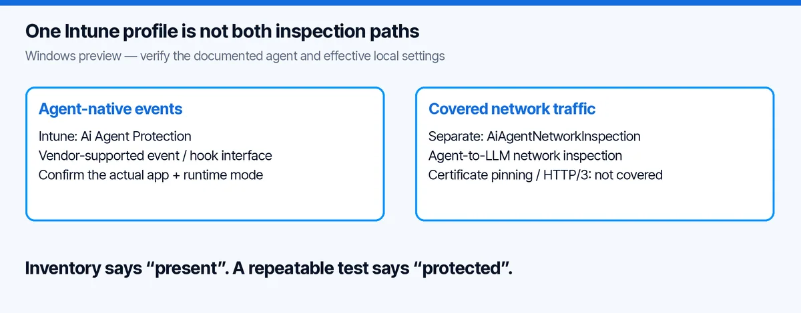
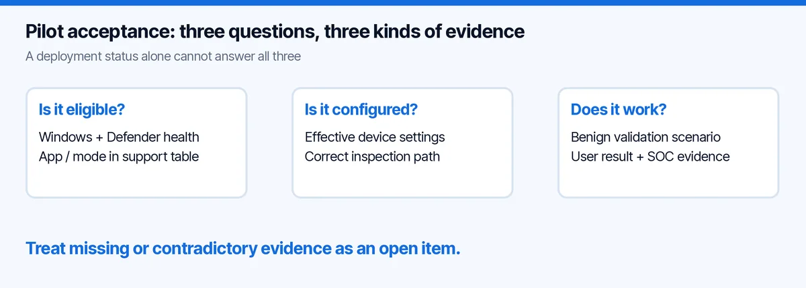

Intune AI Agent Runtime Protection: The Missing Second Switch
I opened the new Intune AI agent runtime protection profile. There was one setting. Microsoftâs documentation describes two inspection paths.
That difference is easy to miss if your acceptance criterion is âthe policy was assigned.â It matters if your actual question is âwhat protects this coding agent on this Windows device?â
I walked through the profile in my Modern Device Management tenant on 12 October 2026. Below is the exact UI, the coverage checks I would make before a pilot, and a small PowerShell collector that reads settings without changing them. This is a portal and configuration walkthrough, not a claim that I blocked an attack on a test endpoint.
Where to Configure Intune AI Agent Runtime Protection
The current path in my tenant is Endpoint security â Antivirus â Create Policy â Windows â Microsoft Defender AI agent runtime protection.

I entered a temporary name, moved to Configuration settings and expanded Defender. The profile exposed Ai Agent Protection. Its menu offered disabled, block and audit modes.

The settingâs help text explains the native hook/bridge approach. This is more useful than inferring coverage from the broad description shown when selecting the profile.

All three screenshots are from the same tenant session. I discarded the form without creating or assigning the policy.
Native events and network traffic are separate paths
Microsoft describes agent-native event inspection and inspection of covered agent-to-model network traffic. The two settings are AiAgentProtection and AiAgentNetworkInspection; the documented Intune antivirus profile configures the native path, while network inspection has a separate PowerShell setup. Runtime-protection setup.

This is why I would not write âenable this profile to secure all local agents.â The sentence hides both a configuration question and a support question.
First, is the relevant path enabled on the endpoint? Second, does the exact application, operating system and usage mode support that path? A Windows policy title cannot answer whether an agent running somewhere else is covered.
Network inspection also has limits. Microsoftâs overview excludes certificate-pinned traffic and HTTP/3. It is not a promise to inspect every packet from every AI application. Runtime-protection overview.
I would start with the supported client configuration, not disable transport security to force a test through an inspection path.
The support table matters more than the product name
There is a subtle documentation mismatch worth calling out. On the review date, the overview named Codex CLI among agents exposing native interfaces. The detailed runtime-support table did not list Codex in its native inspection section, although it appeared in discovery. I would treat that combination as unconfirmed until Microsoft clarifies it, not copy the broader sentence into a deployment promise.
The same table distinguishes Claude Desktop in Code mode from other desktop usage and ChatGPT Desktop in Chat mode on the network path. The latter lists a minimum tested version. Discovery and runtime coverage are separate lists. Current support matrix.
My pilot worksheet therefore has these columns:
| Field | Why I record it |
|---|---|
| OS and build | âInstalled somewhereâ is not a supported operating-system combination |
| Application and version | CLI, desktop and editor extension are different clients |
| Usage mode | A product may have multiple execution paths |
| Inspection method | Native events and network inspection are not synonyms |
| Effective local setting | Assignment intent is not device state |
| Test result and timestamp | Support does not prove the configured control ran |
If any row is unknown, I keep it unknown. A blank cell should not silently become a green tick in the project slide.
Check prerequisites before collecting alert screenshots
The current preview setup requires an eligible Defender entitlement, an onboarded device, active Defender Antivirus and current platform, engine and intelligence versions. The setup guide also specifies the preview update-channel requirement and a minimum intelligence version. These are moving prerequisites, so I would check the live guide before every pilot rather than freeze them into a long-lived baseline. Microsoftâs setup requirements.
I would capture those facts before sending any test prompt. Otherwise a âno alertâ result is hard to interpret: did the detector miss it, was the application unsupported, or was the device never ready?
The portal can help find the policy. The endpoint is where I would check the effective configuration. The SOC view is where I would correlate a detection. They answer different questions.
A read-only PowerShell check
For a quick first pass on a Windows pilot device:
# Read only. These commands do not enable either protection path.
Get-MpPreference |
Select-Object AiAgentProtection, AiAgentNetworkInspection
Get-MpComputerStatus |
Select-Object AntivirusEnabled, RealTimeProtectionEnabled,
AMRunningMode, AMProductVersion,
AntivirusSignatureVersionA missing property is not the same as Disabled. An older platform can produce a different object shape. I want that distinction preserved in evidence rather than lost in a spreadsheet formula.
Here is the slightly more defensive collector I prepared for this review. It emits JSON, performs no network request and does not call Set-MpPreference:
[CmdletBinding()]
param()
$ErrorActionPreference = 'Stop'
$report = [ordered]@{
CapturedAtUtc = [DateTime]::UtcNow.ToString('o')
Scope = 'Local settings only; no enforcement test'
AiAgentProtection = $null
AiAgentNetworkInspection = $null
Errors = @()
}
try {
$preferences = Get-MpPreference
foreach ($name in @('AiAgentProtection', 'AiAgentNetworkInspection')) {
$property = $preferences.PSObject.Properties[$name]
if ($null -eq $property) {
$report.Errors += "Property unavailable: $name"
} else {
$report[$name] = [string]$property.Value
}
}
} catch {
$report.Errors += 'Could not read Defender preferences.'
}
[pscustomobject]$report | ConvertTo-Json -Depth 4Preserve the values as returned. Do not invent a numeric-enum mapping because a similar policy uses one. A report with an error means âinvestigate,â not âprotection confirmed.â
I syntax-checked the full collector locally. I did not execute Defender cmdlets against a Windows endpoint during this walkthrough, so there is no device-result screenshot to pass off as proof.
My pilot would test normal work first
Security validation should not begin and end with an impressive blocked prompt. I would agree on a small set of normal tasks with the developer using the agent:
- Read a synthetic repository and explain a function.
- Propose a small code change in that repository.
- Run the existing tests with the normal approval flow.
- Read a harmless tool response from the approved test service.
Record completion, unexpected prompts and any new friction. A control that blocks the demo but makes everyday work unusable will be bypassed or switched off eventually.
Then I would run Microsoftâs benign validation scenario in the approved pilot environment. The linked demonstration specifically requires the native inspection path; it is not a generic network-inspection test. Keep the expected device and SOC evidence explicit before starting. An agentâs own refusal is not proof of a Defender detection. Microsoftâs runtime-protection demonstration.
Do not use real credentials, production files or customer documents as bait. A synthetic marker is enough to test the observation chain. There is no need to make the exercise more dangerous to make it more convincing.
Audit, block and the result I would accept
Audit is useful for learning what the control would detect without preventing the action. Block is intended to stop supported malicious activity at the available inspection point. Neither means the agent has become incapable of making a bad decision. Microsoftâs mode descriptions.
Here is how I would evaluate the pilot rather than just collect a success screenshot:
| Scenario | Evidence to collect | Result I would not accept |
|---|---|---|
| Ordinary supported workflow | Task completes; no unexplained new failures | âNo complaints yetâ with no task test |
| Benign validation in Audit | Expected action behaviour and correlated detection | Agent error with no explanation of which layer caused it |
| Approved Block test | Action outcome plus matching control evidence | A policy-assignment badge by itself |
| Unsupported or ambiguous client | Explicit coverage gap with owner and next step | Assuming the same vendor name means the same integration |
| Reopened terminal/session | Repeated check after the documented restart step | Only testing a process that predates the change |

For rollout, I would keep a small developer ring first, with someone from endpoint engineering and someone from security reviewing the same results. Decide in advance which false positive stops the expansion and how an exception expires. Those are my operating recommendations, not additional product switches.
Who owns the gap between discovery and protection?
This is where endpoint experience helps AI governance. Inventory, configuration and runtime behaviour need separate owners and separate evidence.
The endpoint team can tell me the managed device and effective preference. The AI platform owner can tell me which client and workflow the developer uses. Security can tell me whether the expected detection arrived and how it was investigated.
I would put all three into the pilot review. Otherwise one team says âthe agent is discovered,â another says âthe policy deployed,â and nobody notices that the actual workflow uses a different path.
My earlier OpenClaw and shadow AI guide focuses on finding and investigating local AI usage. This article starts after that discovery: what can you demonstrate about the protection actually running?
Intune AI Agent Runtime Protection: Common Questions
Does the Intune profile enable both inspection paths?
No. The documented antivirus profile configures agent-native inspection. Network inspection has a separate setup. Check AiAgentProtection and AiAgentNetworkInspection on the actual Windows device, then match the client and version to the support matrix.
Does discovering an AI agent prove it is protected?
No. Discovery, policy assignment and runtime enforcement are different evidence. Intune AI agent runtime protection needs a supported client path and a verified endpoint configuration. A discovery entry alone does not demonstrate either.
Where should I continue after the pilot?
For the wider operational picture, compare Security Copilot agents in Intune with my Intune troubleshooting workflow. Neither replaces the native and network checks in this article.
The takeaway
I like seeing agent runtime protection arrive in the endpoint-management workflow. But the useful unit of coverage is not âAI enabledâ or âDefender installed.â It is this application, in this mode, on this device, through this inspection path.
Start there. Read the two settings separately. Test the normal task and the agreed validation scenario. Keep the unsupported combinations visible.
One policy can be a good start. It should not become a claim that every agent is protected.